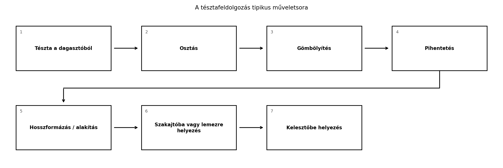

Egy pékségben hajnalban a dagasztóból kikerült tészta még nem mehet a kelesztőbe. Ahhoz, hogy a kemencéből azonos méretű, azonos átsültségű és a fogyasztó által elvárt tömegű kenyerek vagy zsemlék kerüljenek ki, a tésztát előbb fel kell osztani és meg kell formázni. Ha az osztás pontatlan, a kisebb darab hamarabb átsül vagy megég, a nagyobb nyers marad; a boltban pedig tömegeltérés miatt reklamáció lehet. A tésztafeldolgozás tehát a dagasztás és a kelesztés közötti híd: itt dől el nagyrészt, hogy a késztermék mérete, alakja és tömege egyenletes lesz-e.
A tésztafeldolgozás tipikus műveletsorát mutatja az alábbi folyamatábra:

Az ábrán látható sorrend nem formális: a tészta állapotához igazodik. A vágott felületet először gömbölyítéssel zárjuk, ezután rövid pihentetés következik, hogy a sikérváz ellazuljon, és csak ezután végezzük a hosszformázást vagy más alakítást.
Definíció. A tésztafeldolgozás az a műveletsor, amelynek során a bekevert, érett tésztát a kívánt tömegű és alakú nyers tésztadarabokká alakítjuk úgy, hogy közben a gázmegtartó sikérszerkezet a lehető legkevésbé sérüljön, a darabok tömege egyenletes legyen, felületük pedig zárt maradjon.
Szabály. A tésztafeldolgozás alapvető sorrendje: osztás, gömbölyítés, rövid pihentetés, hosszformázás vagy végső alakítás, szakajtóba vagy sütőlemezre helyezés, majd kelesztőbe helyezés. A pontos lépések terméktől függően bővülhetnek (például fonás, sodrás, töltés), de a vágás utáni felületzárást nem szabad kihagyni.
Definíció. A tésztaosztás a tésztafeldolgozás első művelete: a teljes tésztamennyiséget a termékre előírt tömegű nyers tésztadarabokra bontjuk.
Definíció. Egyszerű osztásnak nevezzük, ha a teljes tésztát közvetlenül a végleges darabtömegre osztjuk, akár kézzel, akár géppel.
Definíció. Összetett osztásnak nevezzük, ha a tésztát először nagyobb, közel azonos tömegű részekre osztjuk, majd ezeket a részeket tovább osztjuk a végleges darabokra.
Összefüggés. A tésztaosztás alapvető összefüggése:
ahol a darabszám, a felosztandó tészta tömege, pedig az egy darabra előírt tömeg. A képlet akkor pontos, ha az osztás közben nem vész el tészta, és nem tapad vissza jelentős mennyiség az eszközre. A gyakorlatban a vágólapra, mérlegre vagy gépbe tapadt maradékot a számításnál elhanyagoljuk, de a művelet végén a darabok visszamérésével ellenőrzünk.
Továbbvitt eredmény. Az osztásnál beállított nyers tésztadarab-tömeget a szakma feladási tömegnek is nevezi. A feladási tömegből számítjuk a késztermék késztömegét, a préstömeget és a veszteségekkel korrigált osztási értékeket a Feladási tömeg, préstömeg és osztási számítások alfejezetben. Az itt tanult osztási pontosság tehát közvetlen bemenő adata annak a számításnak.
A dagasztás után a tészta még egyetlen nagy tömeg. Az osztás során a kívánt nyers tésztadarabokra bontjuk. Az osztás lehet kézi vagy gépi, tömeg szerinti vagy térfogatos elvű. Az osztás pontossága határozza meg a késztermék tömegét, ezért az osztott darabokat eleinte gyakrabban, majd tételenként is szúrópróbaszerűen vissza kell mérni.
A vágott vagy szakított tészta felülete nyitott, ragadós, és a sikérszálak szabadon állnak. A gömbölyítés a darabot gömb alakúra feszesíti, a felületet bezárja, és a belső gáztartó szerkezetet egyenletesebben elosztja. A gömbölyítést részletesebben a Gömbölyítő-, hosszformázó gépek és pihentetők, illetve a Kézi osztás, gömbölyítés és hosszformázás alfejezet tárgyalja.
A gömbölyített darabokat rövid ideig letakarva pihentetjük. A pihentetés célja, hogy a megfeszített sikérváz relaxáljon, a tészta ne húzódjon vissza a további formázásnál, és a belső gázbuborékok egyenletesebben rendeződjenek. A pihentetési idő általában 5–20 perc között mozog, de liszt-, tészta- és termékfüggő (ellenőrizendő: üzemi technológiai lap). Hosszabb pihentetésnél a felület kiszáradhat, ezért a darabokat takarni vagy kelesztőben tartani szokták.
A pihentetett gömbölyű darabot a termékre jellemző alakra formázzuk: hosszú cipóvá, zsemlévé, fonássá, hurkává vagy más formává. A formázás célja, hogy a tészta a kelesztés és a sütés alatt megtartsa a kívánt alakot, és a felülete sima, zárt legyen.
A megformázott darabokat a termékre jellemző módon szakajtókosárba, formába, sütőlemezre vagy kelesztőkocsira helyezzük. A sütőlemezeket és szakajtókat csak tisztán, a technológia szerint lisztezve vagy olajozva szabad használni, hogy a tészta ne tapadjon, de ne maradjon rajta felesleges lisztréteg sem.
Egyszerű osztáskor a teljes tésztát közvetlenül a kívánt darabtömegre bontjuk. Kis tételeknél ez kézi méréssel, nagyobb tételeknél osztógéppel történik. Előnye az egyszerű átláthatóság, hátránya viszont az, hogy a nagytömegű tészta közvetlenül kis darabokra való bontása időigényesebb lehet, és a tészta a mérés ideje alatt tovább erjed.
Példa. Ha 24 kg tésztából 0,60 kg-os darabokat kell készíteni, akkor az egyszerű osztás során darabot mérünk le közvetlenül.
Összetett osztáskor a teljes tésztát először nagyobb, azonos tömegű részekre bontjuk, majd a részeket tovább osztjuk. Ezt a módszert akkor érdemes alkalmazni, ha a végleges darabok kicsik, vagy ha a tészta feldolgozása több fázisban történik, és az előosztott részek rövid pihentetése megkönnyíti a további formázást.
Példa. 48 kg tésztából 0,064 kg-os zsemléket készítünk. Először 6 egyenlő részre osztjuk a tésztát: részenként . Ezután minden 8 kg-os részt 0,064 kg-os darabokra osztunk: darab. A teljes darabszám darab. Ellenőrzés: (a 64 g tanulási példaérték, ellenőrizendő: üzemi gyártmánylap).
Az összetett osztás előnye, hogy az előosztás után a tészta egyenletesebben pihen, a mérési pontosság növelhető, és a kisebb részeken a kézi munka is gyorsabban halad. Hátránya, hogy több műveleti lépést és több mérést igényel.
Kézi osztáskor a tésztát a vágóasztalra helyezzük, majd a kívánt tömeget mérlegen ellenőrizve levágjuk vagy „lecsípjük”. A kézi osztás jellemzően kisebb tételeknél, tanműhelyi gyakorlatban vagy akkor használatos, amikor a termék különösen érzékeny a gépi nyomásra.
Higiénia. Kézi osztás előtt a tanuló tiszta munkaruhát, hajhálót visel, ékszert nem hord; kezet mos (szükség szerint fertőtlenít), és mosott kézzel vagy egyszer használatos kesztyűben dolgozik. A vágóasztalt, a tésztakaparót és a mérleget csak élelmiszerrel érintkezésre alkalmas, tiszta felülettel szabad használni. A tésztamaradékot tiszta, fedett edényben, a HACCP-terv szerinti ideig és hőmérsékleten tároljuk (ellenőrizendő: a pékség HACCP-terve).
A kézi osztás lépései:
Az alábbi képsor a lépéseket mutatja: az 1. kocka a lapított tészta a lisztezett asztalon, a 2. a kaparó egyetlen, függőleges vágása, a 3. a darab a nullázott mérlegen (a 2. lépés ellenőrzése), a 4. a kiegészítés apró darabkával, az 5. a sorba rakott, gömbölyítésre váró darabok. Az áthúzott hatodik kocka a kerülendő fogást, a tészta kézi szaggatását mutatja.
Figyeld meg, hogy a kaparó egyetlen mozdulattal, függőlegesen vág: a vágott felület így sima és kicsi, a gömbölyítésnél könnyen bezárható. A HTML-kiadásban a képsor lépésenként léptethető, minden kockához a fejezet lépésének szövege jelenik meg.
Figyelem. Kézi osztásnál a tésztát nem szabad hosszan gyúrni vagy szaggatni, mert a sikérváz sérül, a tészta felülete ragadós lesz, és a darab tömege a visszaragadt maradék miatt megváltozhat. A levágott darabot mindig a mérlegen ellenőrizzük, ne csak szemmértékre bízzuk a tömeget.
Nagyobb tételeknél a tésztaosztást géppel végzik. A gépi osztás két fő elve különböztethető meg: a térfogatos osztás és a tömeg- vagy mérlegelő osztás.
Definíció. Térfogatos osztásnak nevezzük, amikor a gép a tésztát meghatározott térfogatú kamrába adagolja, majd ezt a térfogatot leválasztja. A darab tömege a tészta pillanatnyi sűrűségétől függ.
Definíció. Tömeg szerinti (mérlegelő) osztásnak nevezzük, amikor a gép a darabot tömegmérés alapján választja le, ezért a beállított tömegtől való eltérés kisebb, mint a térfogatos eljárásnál.
A térfogatos osztóknál a tésztát csiga vagy dugattyú egy mérőkamrába nyomja, majd a kamra tartalmát késsel vagy mozgó dugattyúval leválasztja. A mérlegelő osztó a mérőkamrába adagol, a kamra tartalmát mérlegeli, és csak akkor zárja le, ha a tömeg elérte a beállított értéket.
Az ábra bal felső része a térfogatos osztót mutatja (1 garat, 2 csiga vagy dugattyú, 3 mérőkamra térfogattal, 4 kés), a jobb felső a mérlegelő osztót (5 adagoló, 6 mérlegcella, 7 zárószerv, amely a beállított tömegnél zár). Az alsó sor három azonos térfogatú kamratöltete azt mutatja, miért ingadozik a térfogatos gép darabtömege: ugyanabba a térfogatba a tömör, hideg tésztából több, a levegős, sokáig erjedt tésztából kevesebb tömeg fér.
A számok szemléltető tanulási példák: kamratérfogatnál ; ; sűrűség mellett ; ; . A HTML-kiadásban a sűrűség csúszkával állítható: a térfogatos darab tömege változik, a mérlegelőé állandó marad.
Gépbiztonság. Gépi osztót csak betanítás után, felügyelettel, és csak akkor szabad kezelni, ha a gép védőburkolatai, reteszelései és vészleállítója működnek. A garatba tésztát kézzel benyomni a futó gép mellett tilos: a csiga vagy a dugattyú súlyos kézsérülést okozhat. Tisztítás, beállítás, a kamra ellenőrzése vagy elakadás megszüntetése csak leállított, áramtalanított, újraindítás ellen biztosított gépen, a forgó részek teljes megállása után történhet. A védőburkolat kiiktatása vagy a reteszelés áthidalása tilos és balesetveszélyes.
Előírás. A gépi osztót a gépkönyv és a gyártó biztonsági utasításai szerint kell üzemeltetni; a védőberendezéseket nem szabad eltávolítani vagy hatástalanítani. A munkavédelmi és gépbiztonsági előírások betartása a munkáltató és a gépkezelő közös felelőssége (ellenőrizendő: hatályos munkavédelmi rendeletek, gépkönyv, CE-megfelelőségi nyilatkozat).
HACCP. A gépi osztásnál a veszélyelemzés kiterjed az idegenanyag-veszélyre (például a vágó- vagy mozgóelemekről leváló fémdarab), az allergén keresztszennyeződésre (például korábban diós, szezámmagos vagy gluténmentes tétel maradéka), valamint a tésztamaradék mikrobiológiai romlására. A kritikus határ és az ellenőrzési gyakoriság a pékség HACCP-tervétől és a gyártói előírástól függ (ellenőrizendő: a pékség HACCP-terve, a gépkönyv). A tésztamaradékot a higiéniai szabályok szerint kell visszahűteni és felhasználni.
Allergén. A tésztafeldolgozó gépek és a vágóasztalok jellemzően búza- vagy rozsliszttel érintkeznek, ezért gluténtartalmú termékek gyártására szolgálnak. Ha a pékség gluténmentes vagy „mentes” terméket állít elő, külön, elkülönített eszközöket és gépeket kell használni, vagy az átálláshoz a keresztszennyeződést kizáró, validált tisztítási eljárás szükséges (ellenőrizendő: a 1169/2011/EU rendelet szerinti jelölési és gyártási feltételek, a pékség allergénkezelési terve).
A térfogatos osztás alapja a tömeg, térfogat és sűrűség összefüggése:
Ha a gép minden ciklusban ugyanakkora térfogatot adagol, akkor a darab tömege csak akkor lesz állandó, ha a tészta sűrűsége is állandó. A nyers tészta azonban nem merev, hanem rugalmas, gáztartalmú, erjedő rendszer, ezért sűrűsége folyamatosan változhat. A térfogatos osztás pontatlansága éppen ebből adódik.
A tömegingadozás leggyakoribb okai:
Következmény. A térfogatos osztásnál a beállított tömeg csak irányérték. A gyakorlatban a gépbeállítást úgy kell elvégezni, hogy az első darabokat visszamérjük, és a térfogatot addig igazítjuk, amíg a lemért darabok átlaga a kívánt tömeg körül van. A tétel közben szúrópróbaszerűen tovább kell mérni, mert a tészta állapotának változása miatt a beállítás eltolódhat.
A dagasztóból 25 kg tészta érkezett. A technológiai lap szerint a nyers tésztadarab tömege legyen. Hány darabot kell osztani?
Adott: , .
Keresett: .
Képlet: .
Behelyettesítés:
Ellenőrzés: , tehát a felosztás teljes.
A gyakorlatban azonban a mérlegelésnél és a tészta tapadásánál keletkező veszteség miatt az utolsó darab tömege néhány grammal kisebb vagy nagyobb lehet; ezért a kimért darabokat szúrópróbaszerűen visszamérjük.
60 kg tésztából 0,30 kg-os péksütemény-darabokat készítünk. A tésztát először 5 egyenlő részre osztjuk, majd a részeket tovább osztjuk.
Előosztás: .
Másodosztás: részenkénti darabszám: darab.
Összes darabszám: darab.
Ellenőrzés: .
Az összetett osztásnál az előosztott részeket rövid pihentetés után tovább osztjuk, így a tészta a másodosztásnál kevésbé feszül, és a darabok felületét könnyebb zárni.
Egy térfogatos osztógéppel 0,50 kg-os darabokat szeretnénk osztani. A beállítás után 10 darabot visszamérünk:
| Darab | Tömeg (kg) |
|---|---|
| 1 | 0,48 |
| 2 | 0,52 |
| 3 | 0,53 |
| 4 | 0,47 |
| 5 | 0,50 |
| 6 | 0,51 |
| 7 | 0,49 |
| 8 | 0,50 |
| 9 | 0,52 |
| 10 | 0,48 |
Átlag:
Az átlag tehát pontosan a kívánt 0,50 kg. A legkisebb darab 0,47 kg, a legnagyobb 0,53 kg, vagyis a terjedelem 0,06 kg. A névleges 0,50 kg-hoz képest a legnagyobb eltérés −0,03 kg (−6 %) és +0,03 kg (+6 %), ami a készterméknél már átsültség- és méretkülönbséget okozhat. A szórás – ha kiszámítjuk – kb. 0,02 kg (a mintaszórás kb. 0,020 kg), ami jelzi, hogy az átlag jó lehet, de az egyes darabok között jelentős az ingadozás. Ezért a térfogatos osztógépet nem elég egyszer beállítani, hanem a tétel közben is ellenőrizni kell a darabtömeget.
Egy tanpékségben csigás térfogatos osztóval készítettek cipókat (kenyereket). A cél darabonként 0,50 kg nyers tészta volt. Az első 10 visszamérés átlaga 0,50 kg lett, ezért a gépbeállítást jónak tekintették. A sütőből kikerülő cipók azonban a tétel vége felé láthatóan kisebbek lettek, és a boltban több vásárló is jelezte, hogy a csomagolt termékek tömege nem egyenletes.
A visszamérés után kiderült, hogy a tétel első részében a tészta hőmérséklete 24 °C volt, a tétel végére viszont a hosszú várakozás miatt 28 °C-ra melegedett, és az élesztő aktívabban dolgozott. A tészta térfogata megnőtt, sűrűsége csökkent, ezért a változatlan kamratérfogat egyre kevesebb tömegű darabot adott. A tanulság: a térfogatos osztás mellett a tészta hőmérsékletét és az állásidőt is figyelni kell, és a gépet a tétel közben többször vissza kell mérni, nem pedig csak az elején.
Az osztás minőségét elsősorban a darabtömeg mérésével, a darabszám ellenőrzésével és a tésztafelület megfigyelésével ellenőrizzük. A jó osztott darab tömege a tűrésen belül van, felülete nem szakadt, a vágási nyomok nem mélyek, és a darabok között nincs jelentős ragadás. A tömegmérés gyakorisága a technológiától függ: gépi osztásnál beállításkor az első 5–10 darabot, utána bizonyos időközönként vagy darabszámonként 3–5 darabot mérik (ellenőrizendő: a pékség minőség-ellenőrzési utasítása). A kézi osztásnál minden darabot mérlegelhetünk, különösen tanulási helyzetben.
1. feladat (A)
Sorold fel a tésztafeldolgozás műveleteit helyes sorrendben, és írd le
mindegyik célját egy mondatban.
2. feladat (A)
Egy dagasztóból 18 kg tészta érkezett. A termék előírt nyers
tésztadarab-tömege 0,45 kg. Egyszerű osztással hány darabot kell
készíteni?
3. feladat (B)
40 kg tésztát 0,25 kg-os darabokra osztunk. Először 8 egyenlő részre
osztjuk a tésztát, majd a részeket tovább osztjuk. Számítsd ki a
részenkénti tömeget, a részenkénti darabszámot és a teljes darabszámot!
Ellenőrizd a tömegmegmaradást!
4. feladat (B)
Egy térfogatos osztógéppel 0,60 kg-os darabokat szeretnének osztani. A
visszamért 8 darab tömege: 0,57; 0,62; 0,63; 0,56; 0,60; 0,61; 0,58;
0,63 kg. Számítsd ki az átlagot, a legkisebb és legnagyobb eltérést a
0,60 kg-hoz képest, valamint a terjedelmet! Értékeld, hogy a
gépbeállítás megfelel-e!
5. feladat (C)
A tétel elején a gépi osztó 0,50 kg-os darabokat adott, a tétel végén
ugyanazzal a beállítással 0,46 kg-osakat. Sorold fel legalább négy
lehetséges okot, és javasolj javító intézkedéseket!
6. feladat (D)
Tervezd meg egy 30 kg-os tészta feldolgozását: egyszerű vagy összetett
osztást választanál, ha a termék 0,50 kg-os cipó? Add meg a darabszámot,
a mérési pontokat, és írd le, milyen higiéniai és gépbiztonsági
lépéseket kell megtenni, ha gépi osztógépet használsz!
1. feladat (A)
A helyes sorrend: osztás, gömbölyítés, pihentetés, hosszformázás vagy
végső alakítás, szakajtóba vagy sütőlemezre helyezés, kelesztőbe
helyezés. Az osztás a kívánt tömegű darabokra bontás, a gömbölyítés a
felület zárása és a belső szerkezet egyenletesebbé tétele, a pihentetés
a sikérváz ellazítása, a formázás a termék alakjának kialakítása, a
szakajtóba/lemezre helyezés a sütőeszközre rendezés, a kelesztőbe
helyezés pedig a darabok kelesztésre való átadása.
2. feladat (A)
Adott:
,
.
Keresett:
.
Képlet:
.
Behelyettesítés:
.
Ellenőrzés:
.
Tehát 40 darabot kell készíteni.
3. feladat (B)
Adott:
,
,
részek száma 8.
Előosztás:
.
Másodosztás: részenkénti darabszám:
darab.
Teljes darabszám:
darab.
Ellenőrzés:
.
Tehát részenként 5 kg, részenként 20 darab, összesen 160 darab.
4. feladat (B)
Adatok: 0,57; 0,62; 0,63; 0,56; 0,60; 0,61; 0,58; 0,63 kg.
Összeg:
.
Átlag:
.
Eltérések a 0,60 kg-hoz képest: −0,03; +0,02; +0,03; −0,04; 0; +0,01;
−0,02; +0,03 kg.
Legnagyobb eltérés a névleges tömegtől: −0,04 kg (−6,7 %) és +0,03 kg
(+5 %); terjedelem:
.
Értékelés: az átlag pontosan 0,60 kg, de a terjedelem 0,07 kg (a
névleges tömeghez képest −6,7 % és +5 %), ami nagy. A gépbeállítást
javítani kell, és a tömegingadozás okát meg kell keresni.
5. feladat (C)
Lehetséges okok: (1) a tészta hőmérséklete nőtt, erjedése gyorsult,
gáztartalma nőtt, sűrűsége csökkent; (2) a garat töltöttsége változott,
a töltési nyomás csökkent; (3) a tészta a kamra falához tapadt, és a
leválasztott darab tömege csökkent; (4) a tészta hosszabb pihentetés
miatt ellazult, és rugalmas visszahúzódása megváltozott; (5) a gép
kopóelemei vagy tömítései elhasználódtak. Javítás: a tésztaállásidő
csökkentése, hőmérséklet-tartás, a garat egyenletes töltése, a gép
beállításának visszaméréssel való utánigazítása, rendszeres karbantartás
és tisztítás.
6. feladat (D)
30 kg tésztából 0,50 kg-os cipókat készítünk. Darabszám:
darab. Egyszerű osztást választhatunk, ha a tétel kicsi, és a 60 darab
kézzel, mérleggel gyorsan kimérhető; gépi osztásnál térfogatos vagy
mérlegelő osztó használható. Mérési pontok: az első 5–10 darab
visszamérése, majd minden 20. darabnál szúrópróba, a tétel végén újabb
visszamérés. Higiénia: tiszta munkaruha, kézmosás, fertőtlenített
vágóasztal és mérleg, tésztamaradék fedett edényben. Gépbiztonság: a
gépet csak betanított személy kezelje, védőburkolattal, működő
vészleállóval; tisztítás csak áramtalanítás és újraindítás elleni
biztosítás után.
A tésztafeldolgozás a dagasztás és a kelesztés közötti műveletsor, amelynek első lépése az osztás. A tésztát a termékre előírt tömegű nyers darabokra bontjuk, majd a vágott darabokat gömbölyítéssel zárjuk, röviden pihentetjük, megformázzuk, és szakajtóba vagy lemezre helyezzük. Az osztás lehet egyszerű, amikor a teljes tésztát közvetlenül a végleges darabokra osztjuk, vagy összetett, amikor először nagyobb részekre, majd azokat tovább bontjuk. A gépi osztás lehet térfogatos vagy tömeg szerinti. A térfogatos osztás a összefüggésen alapul, ezért a tészta sűrűségének változása – például a gáztartalom, hőmérséklet, pihentetés vagy garattöltöttség miatt – tömegingadozást okoz. A pontos osztás alapja a folyamatos visszamérés. Továbbvitt eredmény: az osztáskor beállított nyers tésztadarab-tömeg a feladási tömeg; a késztermék késztömegének, a préstömegnek és a veszteségekkel korrigált osztási értékeknek a számítása a Feladási tömeg, préstömeg és osztási számítások alfejezetben következik. Gépi osztásnál a gépbiztonsági és higiéniai szabályok, valamint a HACCP szerinti idegenanyag- és allergénkockázat-kezelés kiemelten fontos.